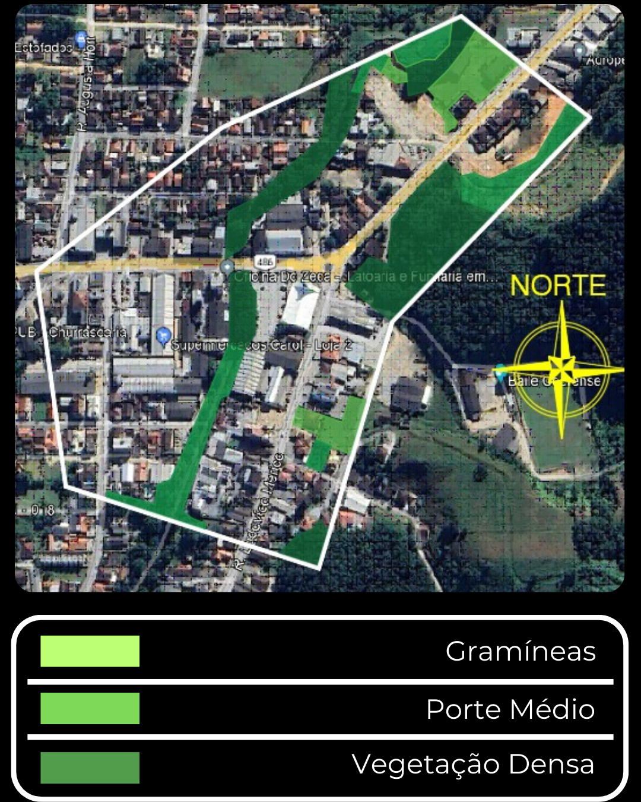
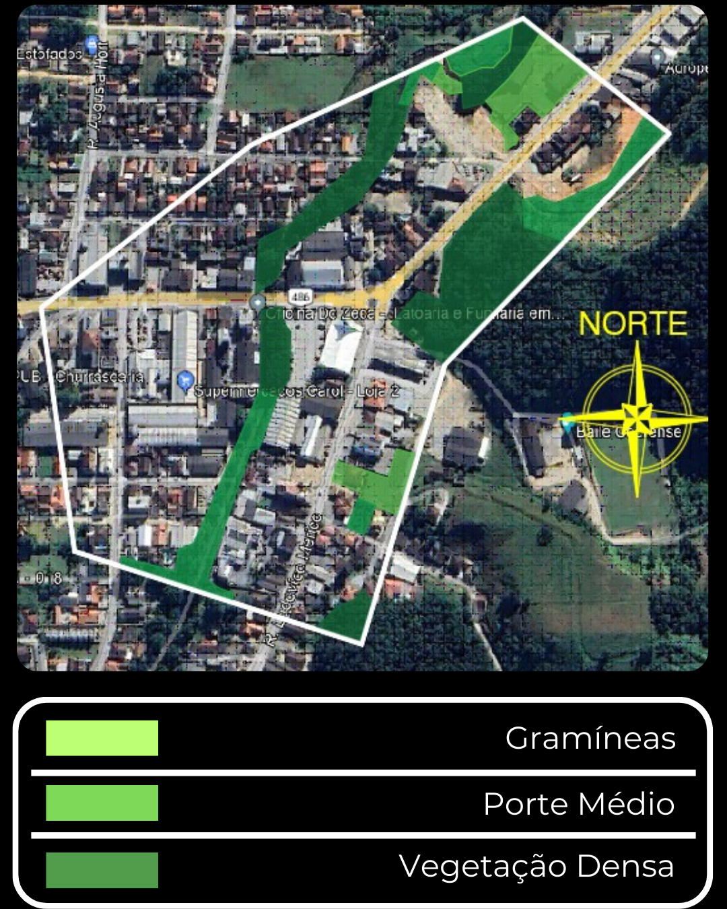

Nesta página você encontrará a exploração das características ambientais do Bairro Dom Joaquim, destacando os principais elementos acerca da: topografia, hidrografia, vegetação e clima do bairro analisado.
As ruas do bairro Dom Joaquim, se modelam ao relevo da região, a área que esta sendo analisada fica situada na parte mais baixa do relevo, também, o ponto considerado mais alto desta parte da área não passa de 80 metros de altura.


O rio que atravessa o bairro está conectado ao Rio Itajaí-Mirim. Nota-se que muitas construções não respeitam a distância adequada que deve ser mantida entre uma edificação e as margens do rio, que é de 10 metros. Esse afastamento é solicitado para promover a melhoria da qualidade do rio e garantir a segurança da população. A presença de uma mata ciliar ao longo das margens do rio ajuda a reduzir o risco de alagamentos durante chuvas intensas, e manter essa distância de 10 metros previne que as casas sejam inundadas ou deslizem em direção ao rio.


Nesta parte do bairro se vê a mistura de três tipos de vegetação gramínea, médio porte e vegetação densa, as gramíneas se encontram nos pastos em lotes sem construção do bairro, já a de médio porte se encontra perto do rio em áreas mais afastada do centro urbano e por fim a vegetação densa seria a mata fechada, tendo variedades de espécies de plantas que vão desde arvores grandes até um pequeno musgo


 
O clima da região é um clima subtropical mesotérmico com verão quente e de temperatura media anual de 19-20ºc. A precipitação media anual varia de 1.500 a 1.700mm e a precipitação máxima em 24horas chega a 160mm. A umidade relativa do ar tem variação média de 84-86%